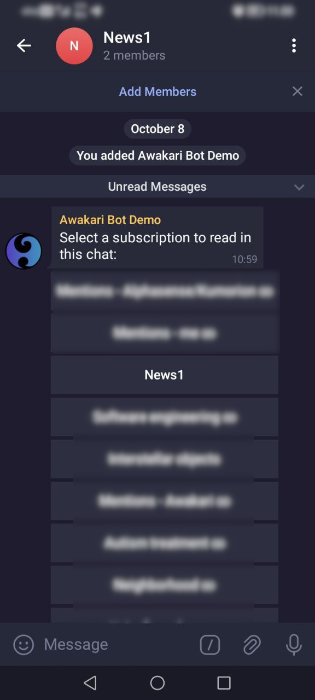
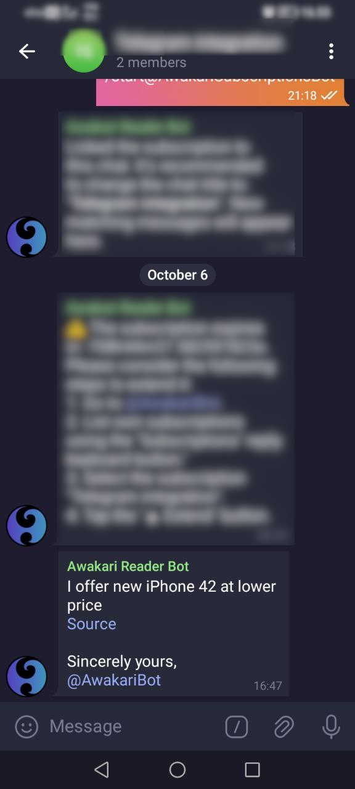
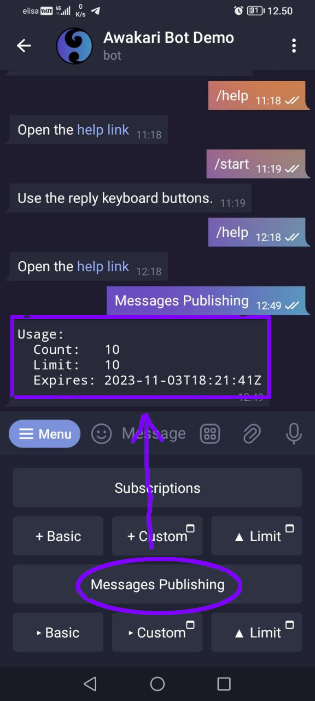
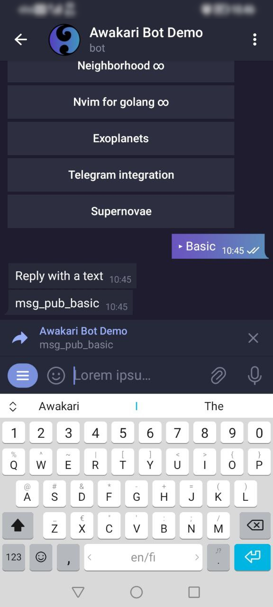
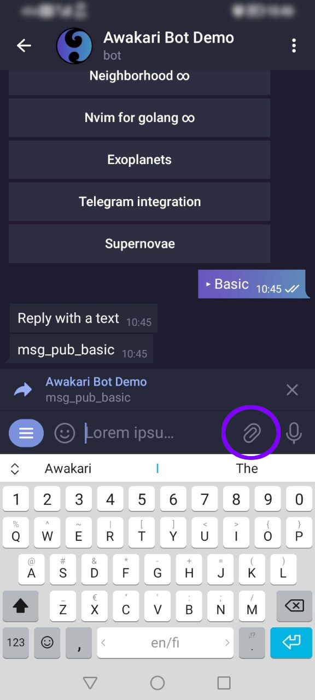
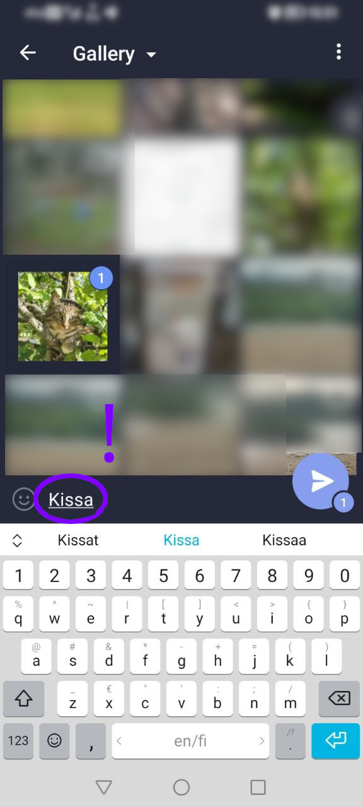
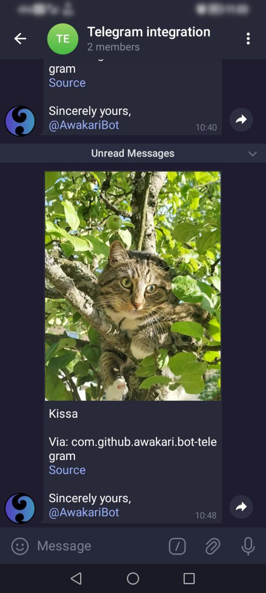

Awakari Bot help
To start using the Awakari Bot it's necessary to agree with Terms of Service and tap the "START" button.

Awakari Bot may be used to publish messages, manage subscriptions and usage limits. These actions are available from the reply keyboard. Additional commands are available from the menu.

Tap the "Subscription" button to display the subscriptions' usage.

First, it displays the usage statistics, allowed subscriptions count limit and limit expiration time.
Count represents the current user's subscription number.
Limit represents the subscriptions number limit. The bot doesn't allow a user to create more subscriptions than defined by the limit. The default limit is for free and offers up to 1 subscription per user.
Expires represents the subscription count limit expiration time. The current limit will be reset to the default limit after this.
Following the usage info, there's a user's subscriptions list. Every list item is a clickable button where the text is the corresponding subscription description.
A subscription may expire depending on its type. When subscription expires, Awakari system stops to deliver messages matching it. Note the special hints after a subscription description:
There are two ways to create a new subscription: Basic and Custom.
Basic allows to create a simple text matching subscription specifying a list of keywords to match.
Custom is for advanced subscription conditions like number conditions or conditions grouping.
Text conditions are limited to 256 keywords.
A group condition with "Or" logic is limited to 4 sub-conditions.
Tap the "+ Basic" reply keyboard button under "Subscriptions".

Reply with subscription name (actually a description without spaces) followed by space and space separated list of keywords.

After subscription is created, the bot offers to link it to a chat to receive the matching messages.

Tap the "+ Custom" reply keyboard button under "Subscriptions".
The form to define advanced matching conditions appears. Available condition types are "Group", "Text" and "Number". Once done, tap the "Submit" button below to create the subscription.
Create a new target group to link the subscription to it.
Invite the Awakari bot to the new group.

Give a name to the new group to find it later. Ideally, the group name should match the subscription description.

Once group is created and the bot is invited, it displays the list of available subscriptions. Select the subscription from the list.
After the subscription is linked to the chat, the bot starts to deliver the matching messages into the group.

The bot will remind when subscription expires sooner than in 1 week.

The bot will send a warning message if subscription is expired.

An incoming message in the group chat will look like this:
Select a subscription from the list to see the subscription details.

Subscription details include: id, description, expiration time and condition.
After the subscription details the bot shows buttons to perform actions on the selected subscription.
The "üè∑ Describe" button is to change the selected subscription description.
The "❌ Delete" button is to delete the selected subscription.
The "▲ Extend" button is to extend the selected subscription expiration time.
A subscription's condition can not be changed currently. Create a new subscription when a different condition is necessary and delete an old one.
Tap the "▲ Extend" button in the subscription details.
The bot will request the number of days to add. Reply with a number in the range of 10-365. After this the bot will request a payment to extend the subscription. A successful payment will complete the operation.

Tap the "▲ Limit" reply keyboard button under "Subscriptions".
The form to define the subscription count limit appears. Once done, tap the "Submit" button below to apply new limits. This requires a payment.
Tap the "Messages Publishing" button to display the corresponding usage.
Count represents the count of messages published. It's been reset daily.
Limit represents the max number of message publications per day. The bot doesn't allow a user to publish more messages than defined by the limit. The default limit is for free and offers up to 1 message publication per day.
Expires represents the message publishing limit expiration time. The current limit will be reset to the default limit after this.
Tap the "▸ Basic" reply keyboard button under "Message Publishing".

It's possible to send a text message, image, video, audio or a document. For a text message, just type the reply text. To publish a media or a document, tap the attachment clip icon. Note that a text caption is required when publishing a media or a document.
Reply with the message text.
If the daily message publishing limit is reached, it's required to pay per additional message publication.

A successful message publication looks like this.
Tap the attachment clip icon and select an image, video, audio or document.
Select a file, for example an image and type the caption text.
Then tap send to publish a message.

When the message is received by someone it will show the attached media or document.
3.3.1. Tap the "▸ Custom" reply keyboard button under "Message Publishing".
3.3.2. Fill the message text and append custom message attributes.
3.3.3. Once ready, tap the "Submit" button. This will require a payment before publishing if a daily message publishing limit is reached.
3.4.1. Tap the "▲ Limit" reply keyboard button under "Messages Publishing".
3.4.2. The form to define the daily message publishing limit appears. Once done, tap the "Submit" button below to apply new limits. This requires a payment.